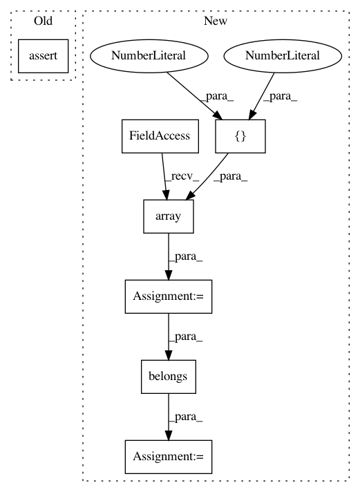

7acb7836e62c5e878d29b8aa267b27eee42825ed,tests/test_hypersphere.py,TestHypersphereMethods,test_mean_and_belongs,#TestHypersphereMethods#,436
Before Change
point_b = self.space.random_uniform(bound=0.5)
point_c = self.space.random_uniform(bound=0.5)
result = self.metric.mean([point_a, point_b, point_c])
self.assertTrue(self.space.belongs(result))
def test_diameter(self):
dim = 2
sphere = Hypersphere(dim)
After Change
@geomstats.tests.np_only
def test_mean_and_belongs(self):
point_a = gs.array([1., 0., 0., 0., 0.])
point_b = gs.array([0., 1., 0., 0., 0.])
mean = self.metric.mean([point_a, point_b])
result = self.space.belongs(mean)
expected = gs.array([[True]])
self.assertAllClose(result, expected)
def test_diameter(self):
In pattern: SUPERPATTERN
Frequency: 3
Non-data size: 7
Instances
Project Name: geomstats/geomstats
Commit Name: 7acb7836e62c5e878d29b8aa267b27eee42825ed
Time: 2019-06-16
Author: ninamio78@gmail.com
File Name: tests/test_hypersphere.py
Class Name: TestHypersphereMethods
Method Name: test_mean_and_belongs
Project Name: geomstats/geomstats
Commit Name: d23fc08bab289d4f33b17c4dcc7782b56ee6f7c7
Time: 2018-12-31
Author: ninamio78@gmail.com
File Name: tests/test_hypersphere.py
Class Name: TestHypersphereMethods
Method Name: test_mean_and_belongs
Project Name: geomstats/geomstats
Commit Name: 224a72d40ac4725f9deb38df8cba15615b3f196d
Time: 2020-03-31
Author: gerald@pop-os.localdomain
File Name: tests/test_hyperbolic_coords.py
Class Name: TestHyperbolicMethods
Method Name: test_belongs_ball